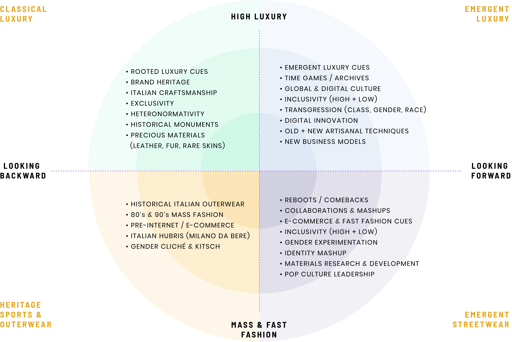
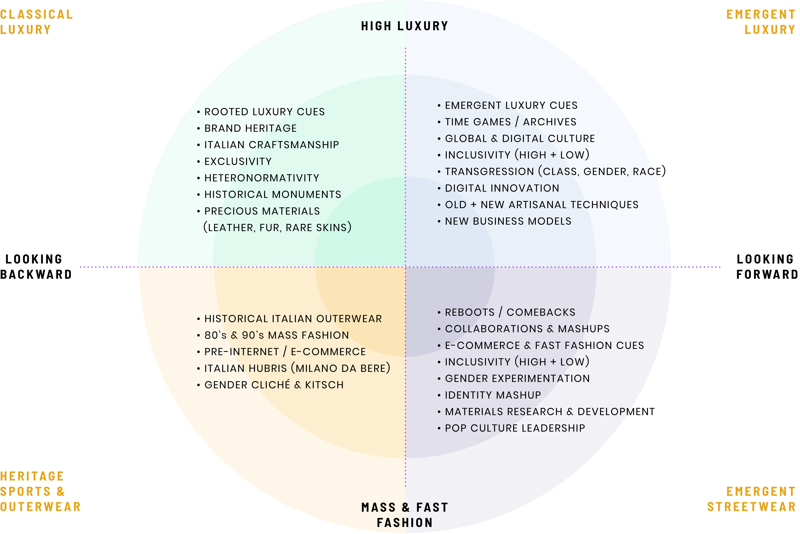

- US
- UK
MARKETS
- TRENDS RESEARCH
- SEMIOTIC BRAND ANALYSIS
- CONCEPT DEVELOPMENT
- PROTOTYPING
Since 2015 Gucci has transformed under the visionary leadership of Alessandro Michele. After conducting a semiotic analysis of the competitor set, and analysing Gucci codes across retail experience, and digital campaigns I propose a fit-for-purpose concept for Augmented Reality to leverage the narrative complexity of Alessandro Michele’s hallucinatory collections.


After identifying we looked at Italian Luxury developments we analyzed Gucci codes across retail, digital and collections, and recent storytelling strategies. To inform possible brand stretch for the brand we looked within and beyond fashion across new media platforms including video gaming, and Augmented reality.
Analysis of storytelling in Italian fashion based on collections and communications activities 2017-2018
 



*Hadid, Kardashian, etc.
*Dirty Sneakers / Normcore
*Archive Collection Valentino, TV Series Halston, Gucci archives
*In tandem with HBO The Get Down
*Gucci X Frieze "Second Summer of Love: London Acid House
*JW Anderson Menswear Livstream on Grindr, Vetements Instagram mini-stories
After analysing offline and online Gucci experience we identified xxxxxxheritage & Alessandro Michele’s Gucci Revolution xxxxxxxOne of the major contributions of Alessandro Michele’s so-called ‘Gucci Revolution’ is the movement of the brand firmly into the 21st century by defining a new vocabulary of luxury as Co-creation, Inclusiveness & Ephemerality.
01.
02.
03.
04.
Analysis of Gucci collections and campaigns from 2017 through 2018 revealed increasingly layered pop culture and historical costuming references. Situating campaign locations and runway shows in historically storied locations ranging from the iconic (Westminster Catherdal and Trevi Fountain) to the obscure (East London Mildway club, and Chatsworth House), aligned Gucci digital content with emergent trends in premium television.